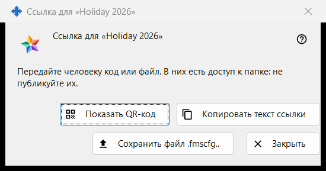
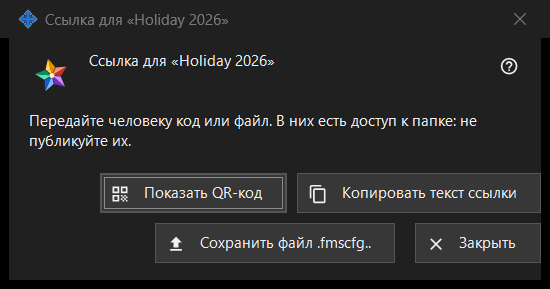

Ссылка для папки
Назначение
Передаёт одну опубликованную папку человеку, у которого нет учётной записи на сервере обмена: в виде QR-кода, текста ссылки и файла .fmscfg. Окно открывается после «Создать ссылку..» или «Новая ссылка..» в группе «Мои папки в учётной записи обмена», а также кнопкой «Показать QR / Код..» в окне «Дать доступ наружу..» у папки. В текущей программе обе команды отключены, потому что доступ для людей вне учётной записи не предлагается; на этой странице описано, что показывает окно, когда ссылка есть.


Порядок действий
- Выберите опубликованную папку и нажмите «Создать ссылку..» (или «Новая ссылка..», чтобы заменить прежнюю).
- Прочтите примечание вверху окна.
- Передайте ссылку одним из способов: «Показать QR-код», «Копировать текст ссылки» или «Сохранить файл .fmscfg..».
- Нажмите «Закрыть».
Элементы окна
Когда окно доступно
Окно есть только у ссылки, которую только что сделали или которая уже существует. Если программа не предлагает доступ людям вне учётной записи, «Создать ссылку..» и «Новая ссылка..» отключены, примечание под ними называет причину, а окно не открывается; «Показать QR / Код..» тоже отключена. «Удалить ссылку» остаётся доступной.
Примечание вверху
«Передайте человеку код или файл. В них есть доступ к папке: не публикуйте их.» Кто держит QR-код, текст ссылки или файл, тот может открыть эту папку. Текст ссылки на экране не показывается.
Показать QR-код
Открывает картинку с QR-кодом в окне увеличения. Кнопка есть, только если QR-код удалось построить; если текст ссылки слишком велик для QR-кода, менеджер отвечает: «Код слишком велик для QR - используйте файл.».
Копировать текст ссылки
Кладёт текст ссылки (он начинается с FMSSFTP2:) в буфер обмена защищённым способом: в историю буфера Windows и в облачный буфер он не попадает. Окно отвечает: «Текст ссылки скопирован.». Кнопка есть, только если у ссылки есть текст.
Сохранить файл .fmscfg..
Сохраняет файл настроек для этой одной папки; прочитать его может только владелец. Окно сообщает «Файл сохранён:» с путём или «Не удалось сохранить файл.». Кнопка есть, только если файл удалось построить.
Новая ссылка и «Удалить ссылку»
Обе команды находятся в группе, а не в этом окне, и обе сначала спрашивают, причём по умолчанию выбрано «Нет»: «Новая ссылка..» предупреждает, что все прежние QR-коды и файлы перестанут работать, «Удалить ссылку» - что перестанут работать все выданные QR-коды и файлы.
Закрыть
Закрывает окно; текст ссылки, содержимое файла и картинка QR из него убираются.
Настройки менеджера · Настройки общего доступа SFTP · Настройки сервера обмена